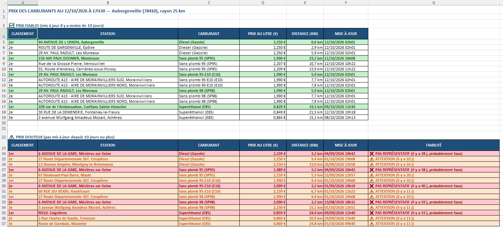

- langagePython 3
- datapandas · numpy
- exportopenpyxl
- sourceAPI open data
- licenceMIT
Outil Python qui trouve les stations-service les moins chères autour d'une ville, à partir des données ouvertes du ministère de l'Économie, et qui vérifie que les prix affichés sont encore à jour.
- carburants comparés
- 5
- de rayon maximum
- 30 km
- niveaux de fiabilité
- 3
Le problème
Les prix des carburants publiés en open data sont déclarés par les stations elles-mêmes. En testant une première version du programme, j'ai constaté qu'une station arrivait 1re sur 4 carburants… avec des prix qui n'avaient pas été mis à jour depuis plus de 50 jours.
Important
Un classement naïf peut recommander des prix qui n'existent plus. Le programme sépare donc les prix fiables des prix douteux avant d'établir le classement.
Comment je l'ai réalisé
-
Saisie et géocodage
L'utilisateur saisit une ville et un rayon en km. La ville est convertie en coordonnées GPS via l'API de la Géoplateforme (IGN). Si plusieurs communes portent le même nom, il choisit dans une liste.
comparateur_carburants.py L282–L289 : gestion des communes homonymes, voir sur GitHub exactes = [ commune for commune in communes if normaliser(commune["nom"]) == normaliser(saisie)]if len(exactes) == 1: choisie: dict[str, Any] | None = exactes[0]else: choisie = choisir_commune(exactes or communes) -
Collecte en temps réel
Les prix de toutes les stations du rayon sont récupérés page par page : l'API renvoie au plus 100 résultats par appel, il faut donc la parcourir jusqu'au bout.
comparateur_carburants.py L187–L195 : collecte paginée, voir sur GitHub stations: list[dict[str, Any]] = []while True: donnees = appeler_api(URL_CARBURANTS, params) if donnees is None: return pd.DataFrame() stations.extend(donnees["results"]) params["offset"] += TAILLE_PAGE_API if params["offset"] >= donnees["total_count"]: break -
Calcul des distances
Distance à vol d'oiseau avec la formule de haversine. Grâce à numpy, une seule opération calcule la distance de toutes les stations, sans boucle.
comparateur_carburants.py L346–L351 : formule de haversine, voir sur GitHub phi1, phi2 = np.radians(lat1), np.radians(lat2)delta_phi = phi2 - phi1delta_lambda = np.radians(lon2) - np.radians(lon1)a = (np.sin(delta_phi / 2) ** 2 + np.cos(phi1) * np.cos(phi2) * np.sin(delta_lambda / 2) ** 2)return 2 * RAYON_TERRE_KM * np.arcsin(np.sqrt(a)) -
Passage au format long
Les données arrivent avec une colonne par carburant. Avec
pd.melt, je passe à une ligne par couple (station, carburant) : filtrer et classer devient beaucoup plus simple.comparateur_carburants.py L397–L401 : passage au format long, voir sur GitHub prix = donnees.melt( id_vars=["id_station", COL_STATION, "distance_km"], value_vars=champs_prix, var_name="champ", value_name=COL_PRIX,)prix["code"] = prix["champ"].str.replace("_prix", "") -
Contrôle de fiabilité
Chaque prix est daté : moins de 10 jours, il est fiable ; de 10 à 20 jours, il est à vérifier ; au-delà de 20 jours, il n'est plus représentatif.
comparateur_carburants.py L422–L436 : classement des prix selon leur ancienneté, voir sur GitHub # np.select retient la PREMIÈRE condition vraie : l'ordre compteage_texte = age.astype("Int64").astype(str)conditions: list[Any] = [ age.isna(), age > SEUIL_NON_REPRESENTATIF_JOURS, age >= SEUIL_FIABILITE_JOURS,]statuts: list[Any] = [ "❌ DATE INCONNUE", "❌ PAS REPRÉSENTATIF (il y a " + age_texte + " j, probablement faux)", "⚠️ ATTENTION (il y a " + age_texte + " j)",]long[COL_STATUT] = np.select(conditions, statuts, default="✅ OK")long[COL_FIABLE] = age < SEUIL_FIABILITE_JOURS # NaN < 10 -> False -
Classement et rapport Excel
Top 3 par carburant, trié par prix puis par distance : à prix égal, la station la plus proche passe devant. Le résultat s'affiche dans la console et part dans un rapport Excel mis en forme (prix fiables en vert, douteux en orange ou rouge), ouvert automatiquement.
comparateur_carburants.py L482–L484 : tri par prix puis par distance, voir sur GitHub top = (prix_carburant.sort_values([COL_PRIX, COL_DISTANCE]) .head(len(RANGS)).copy())top.insert(0, COL_RANG, RANGS[:len(top)])
(ouvrir en taille réelle)Le rapport Excel généré : prix fiables en vert, prix douteux en orange ou rouge.

Choix techniques
| Choix | Pourquoi |
|---|---|
Format long (pd.melt) | Une ligne par couple (station, carburant) : filtres et classements deviennent simples. |
| Calcul vectorisé | Pas de boucle sur les lignes : le code reste lisible et passe à plusieurs milliers de stations. |
| Tri sur 2 critères | Prix croissant, puis distance : à prix égal, la station la plus proche passe devant. |
| Seuils en constantes | 10 et 20 jours sont des choix d'analyste, faciles à ajuster en haut du fichier. |
| Gestion des erreurs | timeout et try/except sur les appels réseau, saisies validées, fichier Excel déjà ouvert : le programme ne plante pas. |
| Code typé et documenté | Type hints, docstrings au format Google, respect de PEP 8. |
Ce que j'ai appris
- Ne pas faire confiance aux données brutes. Une station arrivait 1re avec des prix vieux de plus de 50 jours : contrôler la fraîcheur des données a changé tout le classement.
- Travailler avec une API REST paginée et gérer ses erreurs (délai dépassé, connexion perdue) sans que le programme s'arrête.
- Penser en tableaux plutôt qu'en boucles : format long avec pandas, calculs vectorisés avec numpy.
- Automatiser un livrable : un rapport Excel mis en forme avec openpyxl, prêt à être lu.
- Écrire du code maintenable : types, docstrings, PEP 8 et paramètres regroupés en constantes.
Limites et pistes d'amélioration
- Distance à vol d'oiseau, pas par la route.
- Les prix sont déclarés par les stations : le programme peut signaler un prix douteux, pas le corriger.
- Rayon limité à 30 km (la pagination de l'API est plafonnée à 10 000 résultats).
- Pistes : analyse à l'échelle de la France, carte interactive des stations, application web avec Streamlit.
Lancer le projet
git clone https://github.com/anis-nefikha/comparateur-carburants.git
cd comparateur-carburants
pip install -r requirements.txt
python comparateur_carburants.pySources : prix des carburants en France, flux instantané (v2), ministère de l'Économie · service de géocodage de la Géoplateforme, IGN.